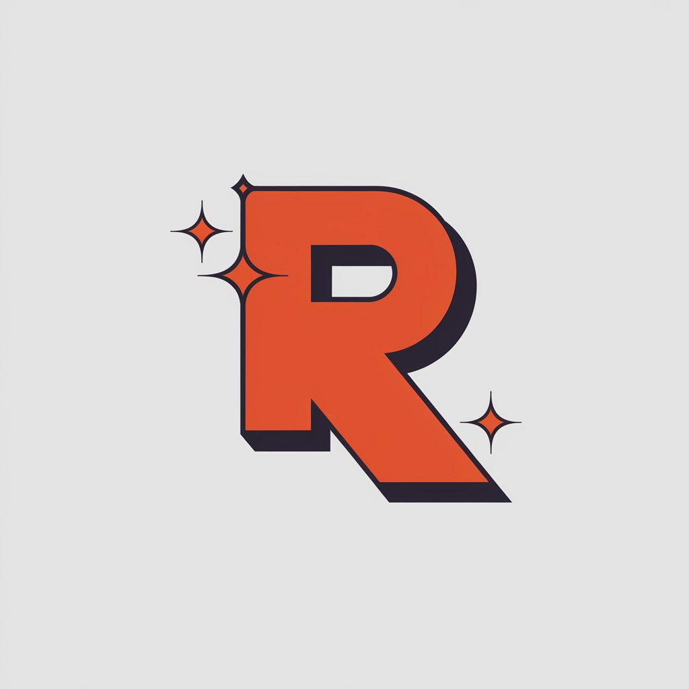

Portafoli Raúl
Activitats Complementàries
Perfil Professional
Soft Skills
Autocandidatura
Experiència Laboral
Certificats Acadèmics
Adaptació al Canvi
El meu projecte professional
El meu projecte innovador
Soc
Raúl Márquez Parente
Benvinguts al meu portafoli personal
Explorar Perfil